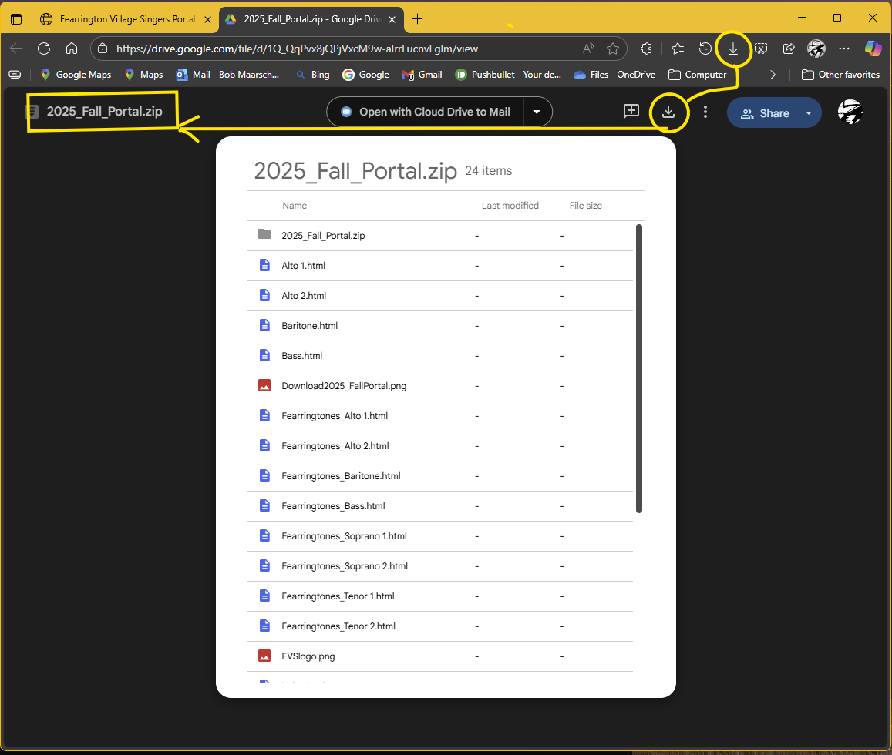

This portal provides a simple, organized way to access and practice choral music for the Fearrington Village Singers. It is designed to work with music files provided by Choral Tracks, which must be downloaded separately.
Extract the Files: Right-click the ZIP file and choose “Extract Here”. This will place all portal files directly into your Choral Tracks root folder.
Launch the Portal: Open the file named index.html located in the root folder.
Example URL: file:///C:/$Data/Archie/Seasonal_Music_Semesters/2025_Fall/index.html
🧭 What to Expect When Downloading
✅ You’ll be taken to a Google Drive preview screen.
📥 Click the Download button (usually top-right corner).
🗂 Save the 2025_Fall_Portal.zip file to your Choral Tracks folder.
🧩 After unzipping, all voice group folders and portal files will be ready to use.
⚠️ Do not delete files unless you’re sure — removing folders may break the portal.
Here’s what the download screen looks like:

📁 All files are necessary for the Portal to function correctly after unzipping.
📄 NOTE: Deleting files may render the portal inoperable. If you're confident, you may remove voice group folders not associated with your part — but if unsure, it's safest to leave all files intact.
📂 Click here to view all the Files required for the Portal
🎧 Listen First: Play each track once before singing to absorb phrasing and dynamics.
🔁 Loop Sections: Use your audio player’s scrub bar to repeat tricky passages until they feel natural.
📄 Follow the Sheet Music: Keep your score nearby to track entrances, rests, and harmony lines.
🎯 Target Transitions: Focus on entrances, cutoffs, and blend moments — they make the difference.
📱 Practice Anywhere: Use headphones and your phone to rehearse on walks, errands, or quiet moments.
🧠 Sing It Silently: Hum or subvocalize parts to reinforce memory without vocal fatigue.
🫶 Support Each Other: Share tips, ask questions, and celebrate progress with your voice group!
🧪 Compatibility & Feedback
This portal has been tested on Windows 11 Pro and should work across all modern browsers and operating systems. If you encounter any issues, please reach out so adjustments can be made.
💬 Final Thoughts 🧠
This portal was created to make music practice more joyful, organized, and accessible. It’s easy to lose track of files or spend time setting things up—this tool is here to simplify that. I hope it enhances your experience and helps you feel more connected to the music and your ensemble.
📁 Alternate access to Archie Google Shared Folder and files.
📄 NOTE: These are personal private members shared Google folders. For DOWNLOAD only. Please do not delete or alter any files. Thank you Select the Download you need from here.
📂 Click here to select files needed for downloading.